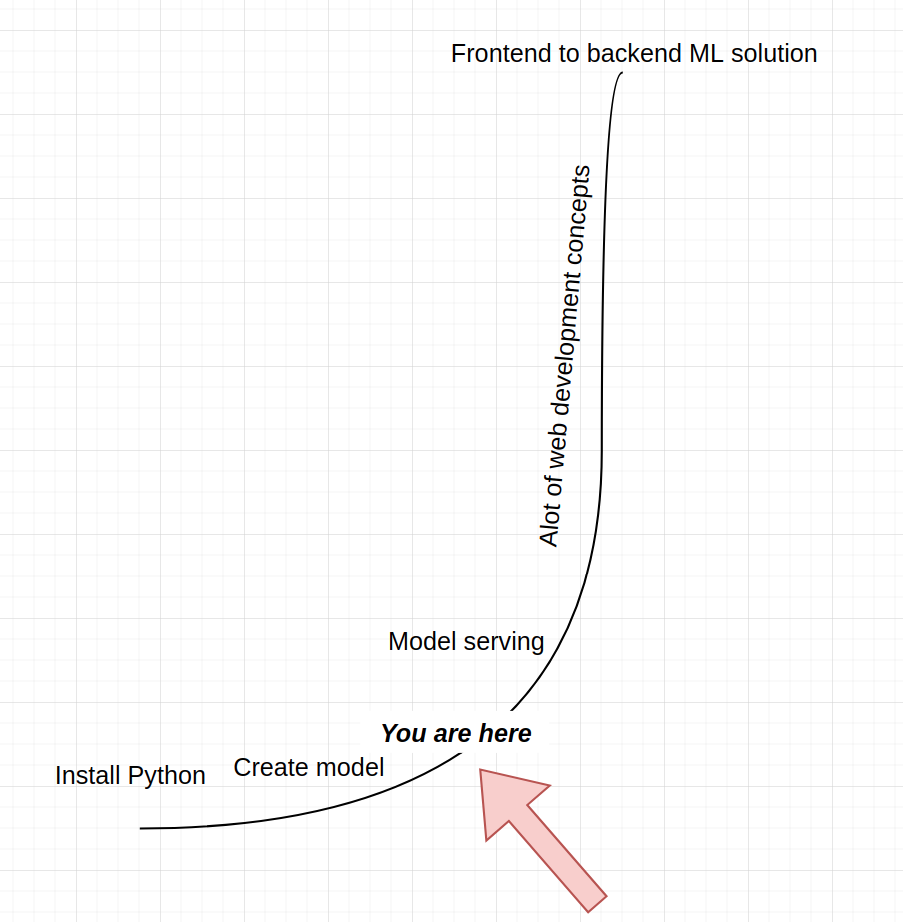

Introduction¶
The phrase serving machine learning models can be split into three definitions:
Machine learning (ML):
The popular term machine learning has many definitions. Some say it is a subset of AI, others are calling AI a subset of machine learning. Personaly, I think that AI and machine learning are synonyms and is just a great way to rebrand statistics. One of the foundational definitions of machine learning is the folowing:
“A computer program is said to learn from experience E with respect to some class of tasks T and performance measure P if its performance at tasks in T, as measured by P, improves with experience E.” - Tom M. Mitchell [Mitchell, 1997]
In other words, in order to do machine learning you need to have data (experience), a set of accuracy metrics (performance measure) and objectives (tasks). There are various machine learning algorithms out there but all of them are trying to achieve a certain objective as best as they can, optimizing certain types of mathematical functions.
ML model:
A model in the software developer circles ussualy refers to a database table. A machine learning model is a more difficult subject. The definitions of an ML model varies greatly in literatures. The one which will be used in this book is:
“A machine learning model is a mathematical relationship between the phenomena we are observing” [Račkaukas, 2003]
A mathematical relationship can be defined as a function \(f\) between the response variable \(\mathbb{Y}\) and the features \(\mathbb{X}\):
If nothing else, the objective of machine learning is quite simple: to find the best \(f\) given data \(\mathbb{Y}\) and \(\mathbb{X}\).
Serving:
The term serving refers to the process of transfering user requests to the ML model, get the outputs from the model and return the outputs to the user as a response. The process of serving is a very similar process to that of an API - Application Programming Interface. The definition of an API is:
“An API is a set of programming code that enables data transmission between one software product and another. It also contains the terms of this data exchange.” [altexsoft, 2021]
Putting it all together¶
To build a better definition, we can put all the three above definitions into a hipothetical example:
Imagine a waiter and a client at the restaurant:

The restaurant clients are sitting near the table and transfer their requests to the kitchen by using the waiter. The waiter tries to understand their requests as best as possible and rushes to the kitchen to get the pizze that everybody wanted. The final output of a waiter is a delicious pizza brought to the table as fast as possible and happy customers.
The exact same logic can be applied to machine learning model serving:
The kitchen is where the models are beeing made.
The waiter is an API which does all the serving.
The pizza is the response gotten from one of the many models available in the kitchen.
The whole restaurant is a personal PC or a cloud service where all the objects are stored and are ready to be used.
Motivation for writting¶
My journey started as a mathematician who was given clean data and the only objective was to select a good ML model, fit the model on data and then interpret the results. For all this I was using the programming language called R. During the start of my career, the output of my work was either a .csv file or uploading data to a given database.
As I matured as a professional I wanted to be independant from all the developers around me and start creating my own APIs, manage databases, log modeling results and overall be a better developer - not just a machine learning practitioner. I enrolled into a Python course, learned some pandas and scikit-learn and thought that I will become a good web developer overnight and start opening my ML models to the world.
But this is where I reached a very steep part of the developer learning curve:

There were alot of new concepts! Most of the documentation which is written for them assumes that a developer is reading them - not a mathematician. I had to dig deep and through sweat, a bit of tears and determination I managed to break into the developer world and start creating production level APIs and Python code.
With this book, I want explain various popular concepts used in web development and API creation for a math grad and not a developer - something I wish I had when I started my developer journey.
I hope that after reading this, alot of statistical folks will get rid of their imposter syndrome as developers and will start creating production ready APIs that serve machine learning models to the world!
Contributions¶
If you enjoyed the book and feel like donating, feel free to do so. The link to do a one time donation is via Stripe.
Additionaly, if you want me to add another chapter or to expand an existing one, please create an issue on Github